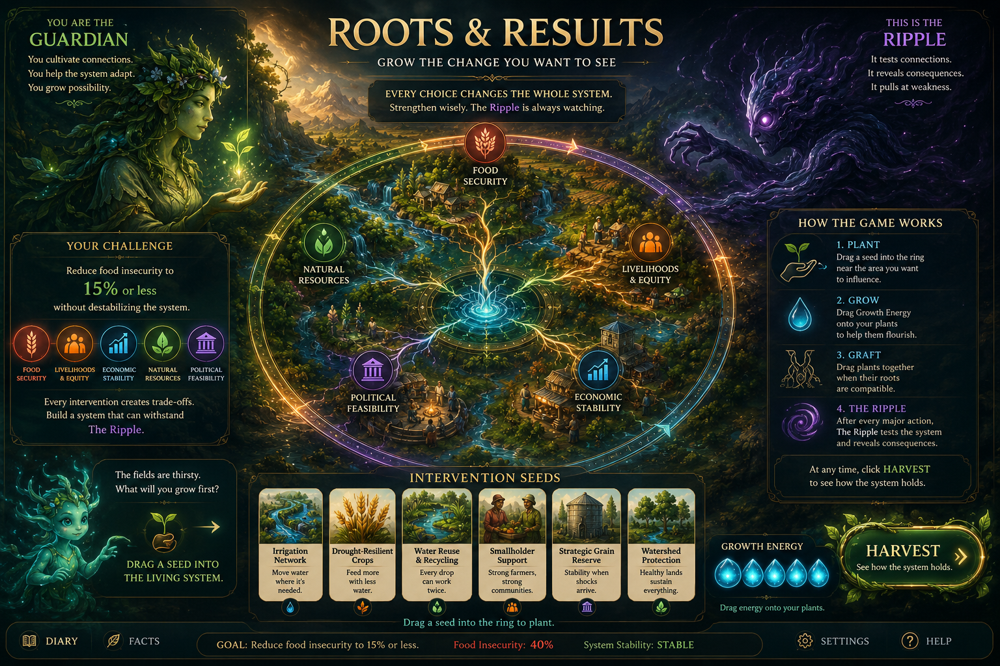

THE GUARDIANThe fields are thirsty. What will you grow first?
FOOD24%Insecurity
EQUITY48%Livelihoods
ECONOMY42%Stability
NATURE38%Resources
FEASIBILITY46%Support
LIVING
SYSTEM
SYSTEM
THE RIPPLETests what you build.
BUILD THE SYSTEM
INTERVENTIONS 0/6
Plant all six interventions to unlock Harvest.